본 포스트는 서울대학교 컴퓨터공학부 시스템 프로그래밍(System Programming, M1522.000800, Fall 2026) 강의 자료 중 13강 — Process Management: Processes (총 58장)를 바탕으로, 강의를 처음 듣는 독자도 논리적 흐름을 따라갈 수 있도록 재구성한 것입니다. 이 강의는 10–12강의 런타임 환경(The Runtime Environment) 단원에 이어 새 단원 프로세스 관리(Process Management)를 여는 강의입니다. 원본 슬라이드는 영문으로 작성되어 있고, 본문의 대섹션은 강의 첫머리의 개요 슬라이드(Process Concept → Context Switching → Process Management API → Summary)를 따르되, Process Management API 아래의 네 항목(Process Creation · Process Termination · Synchronizing with Children · Loading and Running Programs)은 슬라이드에서 각각 별도의 구분 슬라이드로 시작하므로 대섹션으로 올렸습니다. 프로세스 상태 전이도 · PCB · 문맥 교환 세부 그림은 운영체제 교재인 Silberschatz, Galvin & Gagne, Operating System Concepts 3장의 표준 그림과 같은 형태이고, 운영체제의 추상화 그림은 이 과목의 교재인 Bryant & O’Hallaron, Computer Systems: A Programmer’s Perspective (3rd ed.) 1.7절에, 동시 흐름 · 사용자 코드와 커널 코드의 교대 ·
fork의 프로세스 그래프 · 좀비와 수확 ·execve의 인자 목록 그림은 같은 책 8장(8.2절 프로세스 ~ 8.4절 프로세스 제어)에, 열린 파일 테이블 그림은 10.8절(파일 공유)에 대응합니다. 슬라이드 코드는 그대로 옮기되, 그대로는 컴파일되지 않는 두 군데(fork2.c의 오류 처리 줄과fwf5의 둥근 따옴표)만 바로잡고 해당 위치에 그 사실을 밝혔습니다.
한 줄 요약 (TL;DR)
“프로세스는 실행 중인 프로그램의 인스턴스이고, 운영체제는 문맥 교환과 가상 메모리로 ’혼자 CPU와 메모리를 쓴다’는 환상을 만들며,
fork·exit·waitpid·execve네 호출로 그 일생을 다룹니다.”프로세스는 각 프로그램에 논리적 제어 흐름(logical control flow)과 사적 가상 주소 공간(private virtual address space)이라는 두 추상화를 제공합니다. 커널은 프로세스마다 상태와 레지스터 값을 PCB에 보관하고, 한 프로세스의 상태를 저장한 뒤 다른 프로세스의 상태를 복원하는 문맥 교환(context switch)으로 여러 프로세스를 번갈아 실행합니다. 새 프로세스는
fork로 만드는데,fork는 한 번 호출되어 두 번 반환하며(부모에게는 자식의 PID, 자식에게는 0), 자식은 부모 주소 공간의 사본을 받되 실제로는 페이지 테이블만 복사하고 페이지는 쓰기 시 복사(copy-on-write)로 미루며, 열린 파일은 파일 위치까지 공유합니다. 끝난 프로세스는 부모가waitpid로 수확(reaping)해 종료 상태를 받아 갈 때까지 좀비(zombie)로 남고, 부모가 먼저 끝난 고아(orphan)는 init이 입양합니다. 마지막으로execve는 PID와 열린 파일은 그대로 둔 채 주소 공간을 새 프로그램으로 덮어쓰므로,fork→ 자식의execve→ 부모의waitpid가 셸이 명령을 실행하는 기본 골격이 됩니다.
1. 프로세스 개념 (Process Concept)
지난 단원에서는 소스 코드가 링크와 로드를 거쳐 메모리 위의 실행 가능한 이미지가 되기까지를 따라갔습니다. 이번 단원의 주인공은 그 이미지를 실제로 실행하고 있는 주체, 즉 프로세스입니다. 장 표지는 운영체제가 하드웨어 위에 세우는 추상화의 층위를 보여 주며 시작합니다.
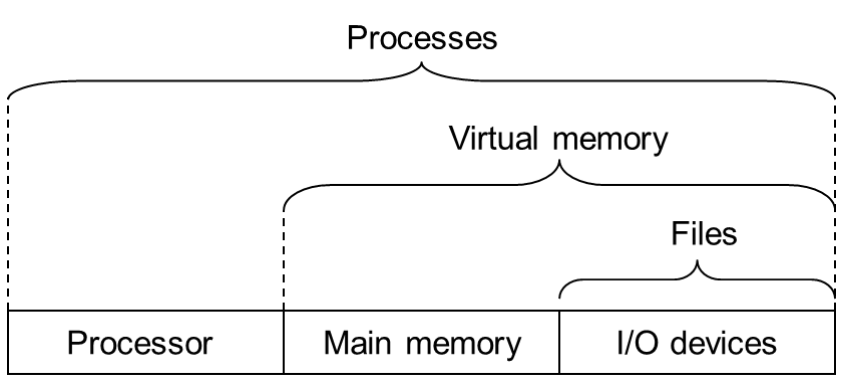
이 그림은 요약 슬라이드(8장)에서 “프로세스는 현대 운영체제의 세 가지 기본 추상화 중 하나이며, 나머지 둘은 파일과 주소 공간”이라는 문장으로 다시 등장합니다. 파일은 I/O 단원(3–5강)에서, 주소 공간은 메모리 단원(6–9강)에서 다루었으므로, 이번 강의로 세 추상화가 모두 모이는 셈입니다.
1.1 프로세스란 무엇인가 (Process Concept)
프로세스(process)는 실행 중인 프로그램의 인스턴스(instance of a running program)입니다.
- 슬라이드는 이것을 컴퓨터 과학에서 가장 심오한 아이디어 중 하나라고 소개합니다.
- “프로그램”이나 “프로세서”와 혼동하지 않아야 합니다. 세 단어는 다음처럼 다릅니다.
| 용어 | 정체 | 예 |
|---|---|---|
| 프로그램(program) | 디스크 위의 실행 파일, 즉 코드와 데이터의 묶음 | /bin/ls |
| 프로세스(process) | 그 프로그램을 지금 실행하고 있는 인스턴스 | ls를 두 번 실행하면 같은 프로그램으로 프로세스가 두 개 생깁니다 |
| 프로세서(processor) | 명령을 실제로 실행하는 하드웨어 | CPU 코어 |
프로세스는 각 프로그램에 두 가지 핵심 추상화를 제공합니다.
- 논리적 제어 흐름(logical control flow) — 각 프로그램은 CPU를 혼자 쓰는 것처럼 보입니다.
- 사적 가상 주소 공간(private virtual address space) — 각 프로그램은 주 메모리를 혼자 쓰는 것처럼 보입니다.
물론 실제로는 CPU도 메모리도 여러 프로그램이 나누어 씁니다. 그렇다면 이 환상(illusion)은 어떻게 유지될까요?
- 제어 흐름의 환상: 프로세스들이 차례로(in sequence) 실행되거나, 번갈아(interleaved) 실행되거나, 서로 다른 코어에서 실행됩니다. 번갈아 실행하는 장치가 2장의 문맥 교환입니다.
- 주소 공간의 환상: 주소 공간은 가상 메모리 시스템이 관리합니다. 프로세스마다 자기 페이지 테이블을 두어 같은 가상 주소가 서로 다른 물리 프레임으로 번역되게 하는 장치로, 7강(Virtual Memory Recap)에서 다루었습니다.
1.2 프로세스를 이루는 것 (Process Concept: A process includes)
프로세스 하나를 이루는 요소는 세 묶음으로 나뉩니다.
- 사적 CPU 상태(private CPU state)
- 프로그램 카운터(program counter) — 다음에 실행할 명령의 주소
- CPU 레지스터(CPU registers)
- 사적 주소 공간(private address space)
- 코드(text)와 데이터(data) 섹션
- 스택(stack)
- 커널 자료 구조(kernel data structures)
- 열린 파일(open files)
- 관리 정보(management information) — 스케줄링, 입출력, 메모리 등
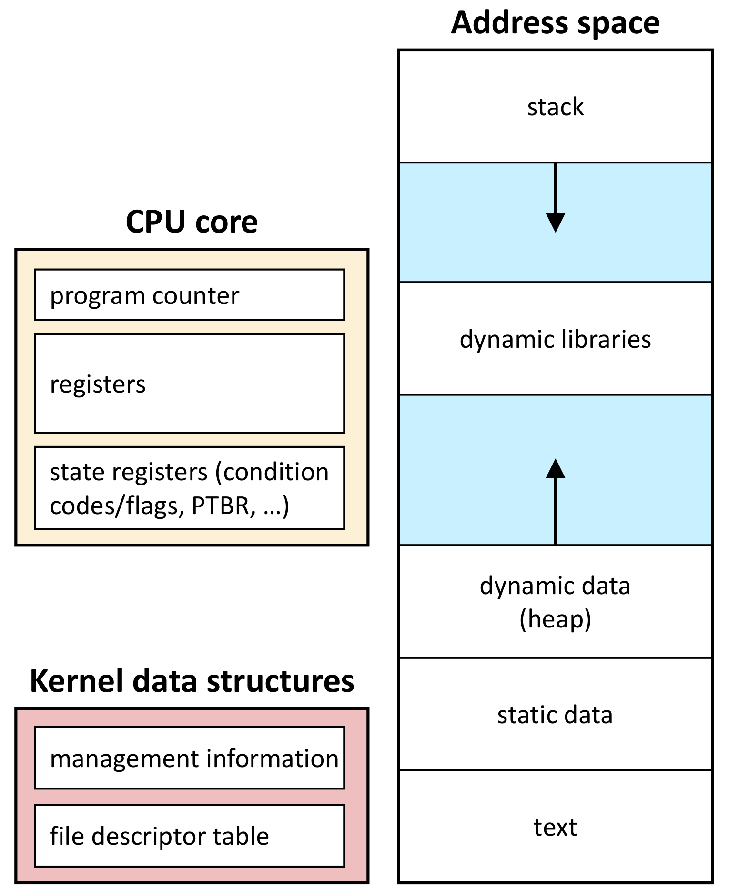
- 오른쪽 주소 공간은 12강에서 본 x86-64 리눅스 프로세스의 주소 공간을 단순화한 것입니다. 링커가 만든 코드와 정적 데이터가 아래에 놓이고, 힙과 스택이 마주 보며 자라는 사이에 공유 라이브러리가 매핑됩니다.
- CPU 상태에 PTBR(page table base register)이 들어 있다는 점이 중요합니다. 이 레지스터가 “지금 어느 페이지 테이블로 주소를 번역하는가”를 정하므로, 다른 프로세스의 PTBR 값을 레지스터에 다시 넣는 것만으로 주소 공간 전체가 바뀝니다. 2장의 문맥 교환이 주소 공간까지 바꿀 수 있는 이유입니다.
1.3 프로세스 상태 (Process States)
프로세스는 실행되는 동안 상태(state)를 바꿉니다.
| 상태 | 의미 |
|---|---|
| new | 프로세스가 생성되는 중입니다 |
| running | 명령이 실행되고 있습니다 |
| waiting | 어떤 사건(event)이 일어나기를 기다리고 있습니다 |
| ready | 프로세서에 배정되기를 기다리고 있습니다 |
| terminated | 실행을 마쳤습니다 |
waiting과 ready는 둘 다 “기다리는” 상태이지만 기다리는 대상이 다릅니다. waiting은 디스크 읽기 완료나 키보드 입력 같은 사건을, ready는 CPU를 기다립니다. ready 상태의 프로세스는 CPU만 주어지면 바로 실행할 수 있습니다.
1.4 프로세스 상태 전이도 (Process State Transition Diagram)
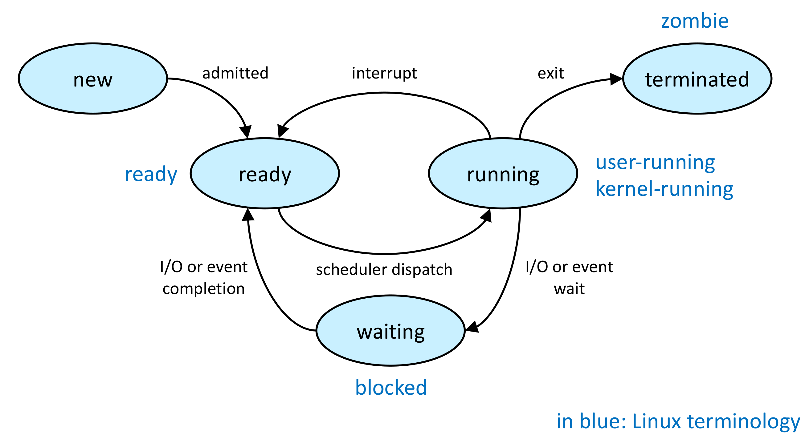
| 전이 | 사건 | 설명 |
|---|---|---|
| new → ready | admitted | 생성이 끝난 프로세스가 실행 후보로 받아들여집니다 |
| ready → running | scheduler dispatch | 스케줄러가 ready 프로세스 중 하나를 골라 CPU를 줍니다 |
| running → ready | interrupt | 타이머 인터럽트 등으로 CPU를 빼앗깁니다. 아직 실행할 수 있으므로 waiting이 아니라 ready로 갑니다 |
| running → waiting | I/O or event wait | 입출력이나 자식의 종료처럼 당장 오지 않는 사건을 기다리기 시작합니다 |
| waiting → ready | I/O or event completion | 기다리던 사건이 일어났습니다. 다시 CPU를 기다립니다 |
| running → terminated | exit | 실행을 마칩니다 |
- 리눅스 용어의 user-running / kernel-running 구분은 2장에서 “커널은 별도의 프로세스가 아니라 어떤 사용자 프로세스의 일부로 실행된다”는 문장과 이어집니다. 시스템 호출을 한 프로세스는 running 상태 그대로 커널 코드를 실행합니다.
- terminated의 리눅스 이름이 zombie인 이유는 5장에서 다룹니다. 끝났지만 아직 완전히 사라지지 않은 상태라는 뜻입니다.
1.5 프로세스 제어 블록 (Process Control Block, PCB)
커널이 프로세스마다 유지하는 정보를 한데 모은 자료 구조가 프로세스 제어 블록(process control block, PCB)입니다. 프로세스 하나에 대해 다음 정보를 담습니다.
- 프로세스 상태 (new, ready, …)
- 프로그램 카운터
- CPU 레지스터
- CPU 스케줄링 정보 (우선순위, 타임 퀀텀, …)
- 메모리 관리 정보 (페이지 테이블, 경계, …)
- 회계 정보(accounting information) (사용한 CPU 시간과 실제 경과 시간, …)
- 입출력 상태 정보
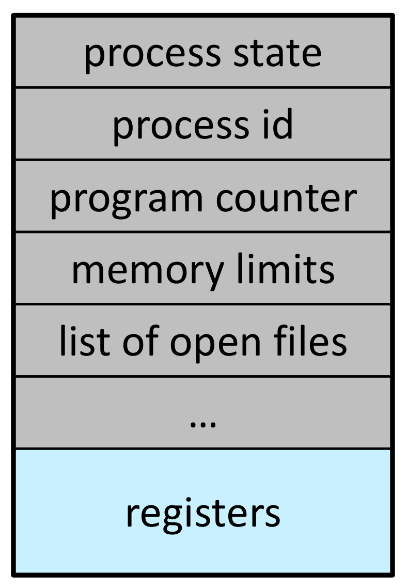
리눅스에서는 PCB가 두 구조체로 구현됩니다.
| 구조체 | 정의 위치 | 크기 (6.5 커널 기준) |
|---|---|---|
task_struct |
include/linux/sched.h |
약 800줄 |
thread_struct |
arch/<arch>/include/asm/processor.h |
약 75줄 |
task_struct가 위에 나열한 정보 대부분을 담는 리눅스의 PCB 본체이고, 구조체 정의만 800줄에 이를 만큼 큽니다.thread_struct는 문맥 교환 때 저장해야 하는 아키텍처별 CPU 상태를 담으므로 경로에<arch>가 들어갑니다. 슬라이드의 링크는 x86의 정의를 가리킵니다.task_struct가thread라는 멤버로 이 구조체를 품는 관계입니다.
1.6 프로세스 생성 (Process Creation)
- 프로세스는 언제나 부모 프로세스(parent process)가 만듭니다.
- 그래서 프로세스들은 나무 모양의 계층 구조(tree-like hierarchy)를 이룹니다.
- 프로세스는 프로세스 식별자(process identifier, PID)로 식별되고 관리됩니다.
- 부모와 자식 사이의 자원 공유
fork()는 부모의 사본(= 자식)을 만듭니다.- 자식은 부모의 주소 공간과 같지만 별개인(same but separate) 사본을 가집니다.
- 열린 파일은 모두 공유됩니다 — 자식은 부모의 열린 파일을 전부 물려받습니다.
fork()는 4장에서 자세히 다룹니다.
- 실행 방식은 두 가지가 가능합니다.
- 부모와 자식이 동시에(concurrently) 실행됩니다.
- 부모가 자식(들)이 끝날 때까지 기다립니다. 이때 쓰는 호출이 6장의
waitpid()입니다.
“언제나 부모가 만든다”면 맨 처음 프로세스는 누가 만들까요? 다음 절의 트리 맨 위에 있는 PID 0은 부팅 과정에서 커널이 직접 만든 프로세스이고, 5.3절에서 보듯 첫 사용자 수준 프로세스인 init(PID 1)은 이 PID 0이 만듭니다.
1.7 리눅스 시스템의 프로세스 트리 예 (Example Process Tree on a Linux System)
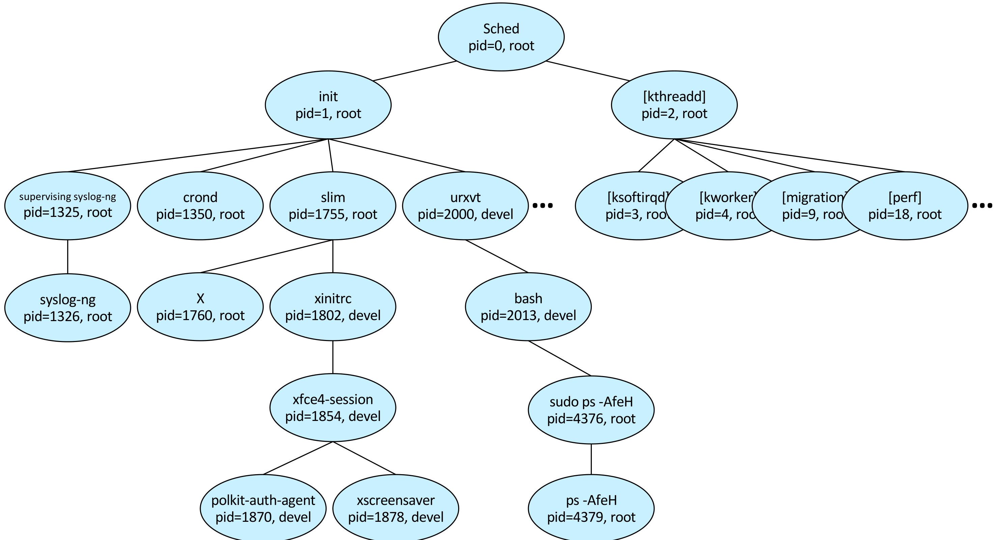
- 두 개의 큰 줄기. 왼쪽 init 줄기는 시스템 서비스(로그 기록
syslog-ng, 예약 작업crond, 로그인 화면slim)와 사용자 세션으로 이루어진 사용자 수준 프로세스들이고, 오른쪽 kthreadd 줄기는 커널이 내부 작업을 위해 돌리는 커널 스레드들입니다. - 소유자가 바뀌는 지점. 일반 사용자
devel의 셸bash가 실행한sudo는 root 소유입니다.sudo는 root 권한으로 실행되는 프로그램이고, 그 자식인ps도 root 권한을 물려받습니다. - 트리를 그린 명령이 트리 안에 있습니다.
ps -AfeH는 모든 프로세스를(-A,-e) 자세한 형식으로(-f) 계층에 맞춰 들여쓰기해(-H) 보여 주는 명령이므로, 이 그림은 그 명령을 실행한 순간의 스냅숏이며 그 순간 실행 중이던ps자신도 찍혀 있습니다.
2. 문맥 교환 (Context Switching)
1.1절에서 “각 프로그램은 CPU를 혼자 쓰는 것처럼 보인다”고 했습니다. 코어보다 프로세스가 훨씬 많은데도 이 환상이 유지되는 이유가 이 장의 주제입니다.
2.1 문맥 교환 (Context Switching)
- 프로세스들은 커널(kernel)이라는, 모두가 공유하는 운영체제 코드 덩어리가 관리합니다.
- 커널은 별도의 프로세스가 아닙니다. 커널은 어떤 사용자 프로세스의 일부로서 실행됩니다. 프로세스가 시스템 호출을 하거나 인터럽트가 걸리면, CPU는 그 프로세스의 문맥에서 커널 코드를 실행합니다(1.4절의 kernel-running).
- 제어 흐름은 문맥 교환(context switch)을 통해 한 프로세스에서 다른 프로세스로 넘어갑니다.
- 옛 프로세스의 상태를 저장하고, 새 프로세스의 저장된 상태를 불러옵니다(PCB에서).
- 문맥 교환 시간은 오버헤드입니다. 교환하는 동안 시스템은 쓸모 있는 일을 하지 않습니다.
- 걸리는 시간은 하드웨어 지원에 따라 달라집니다.
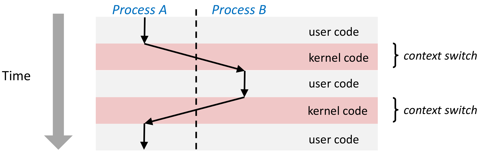
2.2 문맥 교환의 세부 과정 (Context Switch Details)
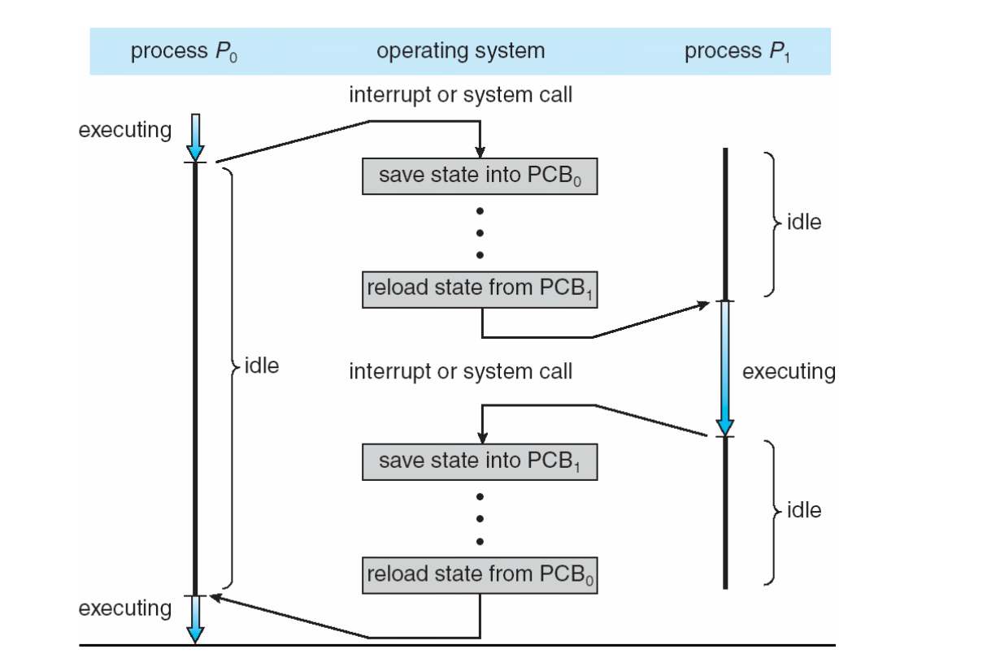
그림의 한 주기를 단계로 정리하면 다음과 같습니다.
| 단계 | 실행 주체 | 일어나는 일 |
|---|---|---|
| ① | P0 | 사용자 코드를 실행합니다 |
| ② | 운영체제 | 인터럽트나 시스템 호출로 커널에 들어와, P0의 레지스터 등 CPU 상태를 PCB₀에 저장합니다 |
| ③ | 운영체제 | 다음에 실행할 프로세스로 P1을 고르는 등의 커널 작업을 합니다(그림의 점 세 개) |
| ④ | 운영체제 | PCB₁에서 P1의 상태를 복원합니다. 프로그램 카운터와 PTBR까지 복원되므로 CPU는 P1이 멈췄던 바로 그 명령, 그 주소 공간으로 돌아갑니다 |
| ⑤ | P1 | P1이 이어서 실행됩니다. P1 입장에서는 잠시 멈췄던 적이 없는 것처럼 보입니다 |
②–④ 동안에는 P0도 P1도 진전이 없습니다. 이 구간이 짧을수록 좋으며, 상태 저장과 복원을 하드웨어가 얼마나 도와주는지에 따라 길이가 달라집니다.
2.3 동시에 실행되는 프로세스 (Concurrent Processes)
두 프로세스의 흐름이 시간상 겹치면(overlap in time) 두 프로세스는 동시에(concurrently) 실행된다고, 즉 동시적(concurrent)이라고 합니다. 겹치지 않으면 순차적(sequential)이라고 합니다.
여기서 “흐름이 겹친다”는 것은 한 프로세스가 처음 실행을 시작한 때부터 마지막으로 실행을 마친 때까지의 구간이 다른 프로세스의 그 구간과 겹친다는 뜻입니다. 같은 순간에 둘 다 실행되고 있어야 한다는 뜻이 아닙니다.
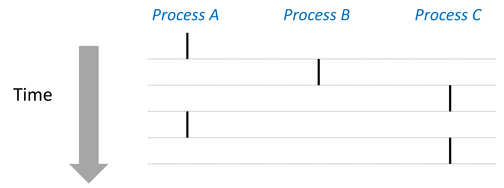
다섯 구간을 시각 \(t_0 < t_1 < \dots < t_5\)로 나누고 각 프로세스의 흐름을 첫 시작부터 마지막 끝까지의 구간으로 적으면 다음과 같습니다.
\[ A: [t_0, t_4], \qquad B: [t_1, t_2], \qquad C: [t_2, t_5] \]
| 쌍 | 구간의 관계 | 판정 |
|---|---|---|
| A와 B | \([t_1, t_2] \subset [t_0, t_4]\) | 동시적 |
| A와 C | \([t_2, t_4]\)에서 겹침 | 동시적 |
| B와 C | B가 \(t_2\)에 끝난 뒤 C가 \(t_2\)에 시작 | 순차적 |
슬라이드의 결론도 같습니다 — 단일 코어에서 동시적: A와 B, A와 C, 순차적: B와 C입니다.
2.4 사용자가 보는 동시 프로세스 (User View of Concurrent Processes)
- 단일 코어 시스템에서 동시 프로세스들의 제어 흐름은 물리적으로 시간상 떨어져 있습니다.
- 그럼에도 우리는 동시 프로세스들이 서로 병렬로(in parallel) 실행된다고 생각할 수 있습니다.
- 멀티코어 시스템에서는 동시 프로세스들이 실제로 병렬로 실행될 수 있습니다.
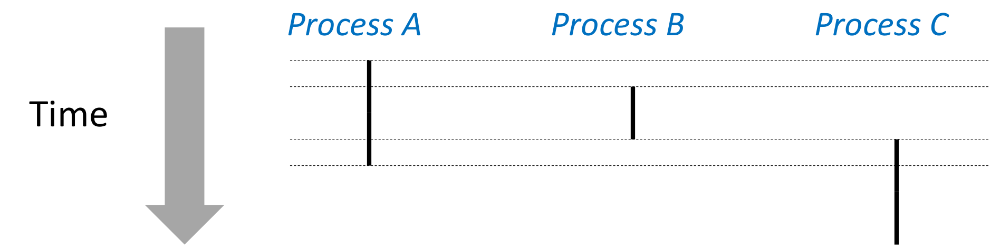
- 동시성(concurrency)은 두 흐름의 실행 기간이 겹치는가를 묻는 논리적 개념입니다. 단일 코어에서도 문맥 교환으로 얼마든지 생깁니다.
- 병렬성(parallelism)은 두 흐름이 같은 순간에 서로 다른 코어에서 실행되는가를 묻는 물리적 개념입니다.
- 따라서 병렬로 실행되는 흐름은 언제나 동시적이지만, 동시적인 흐름이 병렬일 필요는 없습니다. 이 강의의 예제들이 “부모와 자식 중 누가 먼저 출력할지 모른다”고 말할 때 문제 삼는 것은 병렬성이 아니라 동시성입니다. 단일 코어에서도 스케줄러가 순서를 정하기 때문입니다.
3. 프로세스 관리 API (Process Management API)
이제 프로그래머가 프로세스를 다루는 수단, 즉 시스템 호출 인터페이스로 넘어갑니다. 이 장의 구분 슬라이드에 그려진 프로세스의 일생 그림은 4–7장의 구분 슬라이드에도 그대로 다시 나오는데, 매번 그 장의 주제인 노드 하나만 진하게 강조됩니다(4장 fork(), 5장 exit(), 6장 waitpid(), 7장 execv()).
3.1 API 한눈에 보기 (Process Management API)
| 동작 (Operation) | API | 변형 (Variants) | 다루는 장 |
|---|---|---|---|
| 프로세스 생성 (Process creation) | pid_t fork(void) |
vfork |
4장 |
| 프로세스 종료 (Process termination) | void exit(int status) |
abort |
5장 |
| 프로세스 기다리기 (Wait for process) | pid_t waitpid(pid_t pid, int *wstatus, int opt) |
wait, waitid |
6장 |
| 프로세스 바꾸기 (Replace process) | int execv(char *pathname, char *argv[]) |
execl*, execv* |
7장 |
| 자신의 PID 얻기 (Get own PID) | pid_t getpid(void) |
||
| 부모의 PID 얻기 (Get parent’s PID) | pid_t getppid(void) |
pid_t는 PID를 담는 부호 있는 정수 자료형입니다. 부호가 있기 때문에fork가 실패를-1로 알릴 수 있습니다.- “Replace process”라는 이름이
exec계열의 본질을 잘 드러냅니다. 새 프로세스를 만드는 것이 아니라 지금 프로세스의 내용을 갈아 끼웁니다.
3.2 프로세스의 일생과 API (Process Lifetime & Process Management API)
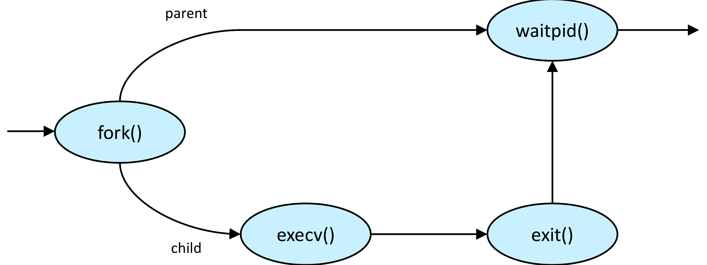
- 부모가
fork()로 자신을 복제합니다(4장). - 자식은
execv()로 자기 내용을 실행할 프로그램으로 바꿉니다(7장). - 자식은 일을 마치고
exit()으로 종료합니다(5장). - 그동안 부모는
waitpid()로 자식의 종료를 기다렸다가, 종료 상태를 받아 들고 계속 진행합니다(6장).
4. 프로세스 생성 (Process Creation)
4.1 한 번 호출, 두 번 반환 (pid_t pid = fork())
pid_t pid = fork()
- (부모가) 한 번 실행합니다.
- 두 번 반환합니다 — 부모에서 한 번, 자식에서 한 번.
- 실패하면: 부모에게
-1을 반환합니다(자식은 만들어지지 않습니다). - 성공하면
- 부모에게는 자식 프로세스의 PID를 반환합니다.
- 자식에게는 0을 반환합니다.
- 실패하면: 부모에게
fork()가 돌아오는 순간 프로세스는 이미 둘입니다. 둘은 같은 코드의 같은 지점, 즉 fork()의 반환 직후에서 실행을 이어 가며, 반환값만으로 자신이 부모인지 자식인지를 구별합니다. 그래서 fork() 다음에는 거의 언제나 반환값으로 갈라지는 if가 옵니다.
- 자식에게 0을 돌려주는 것은 모호하지 않습니다. 실제 자식의 PID는 0일 수 없고(PID 0은 1.7절 트리의 뿌리입니다), 자식은 필요하면
getpid()와getppid()로 자신과 부모의 PID를 알 수 있기 때문입니다. - 반대로 부모에게는 방금 만든 자식의 PID를 알 다른 방법이 없으므로, 그 PID를 반환값으로 줍니다. 부모는 이 값으로 나중에 특정 자식을 기다립니다(6.4절).
int main(int argc, char *argv[]) {
pid_t pid = fork();
if (pid == -1) {
perror("Cannot fork child"); // 실패: 부모만 여기 온다
return EXIT_FAILURE;
}
printf("pid = %5d, my pid = %5d, parent's pid = %5d\n", pid, getpid(), getppid());
return EXIT_SUCCESS;
}$ ./fork1
pid = 24148, my pid = 24147, parent's pid = 12542
pid = 0, my pid = 24148, parent's pid = 24147fork1.c는 성공한 뒤 부모와 자식이 같은 printf를 실행합니다. 출력 두 줄을 서로 맞춰 보면 PID의 관계가 정확히 드러납니다.
| 줄 | 출력한 프로세스 | pid (fork의 반환값) |
getpid() |
getppid() |
|---|---|---|---|---|
| 1 | 부모 | 24148 (자식의 PID) | 24147 | 12542 (이 프로그램을 실행한 셸) |
| 2 | 자식 | 0 | 24148 | 24147 (부모의 PID) |
- 부모가 받은 반환값 24148이 자식의
getpid()와 같고, 자식의getppid()24147이 부모의getpid()와 같습니다. - 부모의 부모 12542는 5.5절의
ps출력에서bash로 나타나는 바로 그 PID입니다. %5d는 다섯 칸 너비로 오른쪽 정렬하므로 0은0으로 찍힙니다.
4.2 1:1 복사 (Process Creation)
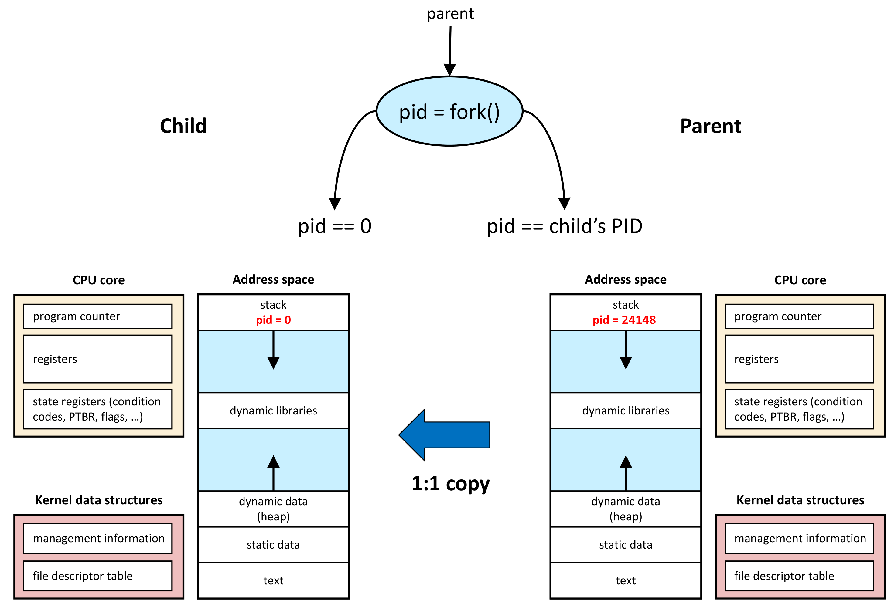
- 주소 공간이 통째로 복사됩니다 — 코드, 정적 데이터, 힙, 공유 라이브러리 매핑, 스택까지.
- CPU 상태도 복사됩니다. 프로그램 카운터가 같으므로 두 프로세스 모두
fork()의 반환 지점에서 실행을 이어 갑니다. 다른 것은 반환값을 담는 레지스터의 값뿐이고, 그 값이 스택의 지역 변수pid에 저장되면서 그림의 빨간 글씨 차이가 생깁니다. - 커널 자료 구조도 복사됩니다. 특히 파일 디스크립터 테이블의 복사가 4.4절의 주제입니다. 물론 PID와 부모 PID처럼 두 프로세스를 구별하는 관리 정보까지 같을 수는 없습니다.
- “통째로 복사”는 의미상 그렇다는 것이고, 실제 구현은 4.6절의 쓰기 시 복사로 이 비용을 피합니다.
4.3 fork() 직후 (Process Creation: Immediately after fork())
- 부모와 자식은 같은 코드를 실행합니다.
- 모든 변수가 같은 값을 가집니다 (
fork()의 반환값만 예외).
그러나 “같은 값”은 같은 변수가 아니라 같은 값을 가진 두 벌의 변수입니다. fork2.c가 이것을 확인합니다.
int main(int argc, char *argv[])
{
int a=1, b=2;
printf("[%5d] parent: a = %d, b = %d\n", getpid(), a, b);
pid_t pid = fork();
if (pid == -1) { /* error handling */ }
if (pid > 0) { // parent
printf("[%5d] parent: pid = %d\n", getpid(), pid);
printf("[%5d] parent: a = %d, b = %d\n", getpid(), a, b);
a = a*100; // 부모는 a만 바꾼다
sleep(3);
printf("[%5d] parent: a = %d, b = %d\n", getpid(), a, b);
} else if (pid == 0) { // child
printf("[%5d] child: pid = %d\n", getpid(), pid);
printf("[%5d] child: a = %d, b = %d\n", getpid(), a, b);
b = b*100; // 자식은 b만 바꾼다
sleep(2);
printf("[%5d] child: a = %d, b = %d\n", getpid(), a, b);
}
return pid < 0 ? EXIT_FAILURE : EXIT_SUCCESS;
}$ ./fork2
[25604] parent: a = 1, b = 2
[25604] parent: pid = 25605
[25604] parent: a = 1, b = 2
[25605] child: pid = 0
[25605] child: a = 1, b = 2
…sleep…
[25605] child: a = 1, b = 200
[25604] parent: a = 100, b = 2| 시점 | 부모 (25604) | 자식 (25605) |
|---|---|---|
fork 이전 |
a = 1, b = 2 출력 |
(아직 없음) |
fork 직후 |
pid = 25605, a = 1, b = 2 출력 → a = 100 → 3초 잠 |
pid = 0, a = 1, b = 2 출력 → b = 200 → 2초 잠 |
| 약 2초 뒤 | (자는 중) | a = 1, b = 200 출력 — 부모가 바꾼 a가 보이지 않음 |
| 약 3초 뒤 | a = 100, b = 2 출력 — 자식이 바꾼 b가 보이지 않음 |
(종료) |
- 마지막 두 줄이 결론입니다. 각자 한 변수씩 바꿨지만 상대의 변경은 보이지 않습니다.
fork이후 두 프로세스는 같은 이름의 변수를 각자의 주소 공간에 따로 가집니다. fork직후 부모의 두 줄이 자식의 두 줄보다 먼저 찍힌 것은 이번 실행에서 스케줄러가 부모를 먼저 실행했기 때문입니다. 2.4절에서 말한 대로 이 순서는 보장되지 않습니다. 반면 마지막 두 줄의 순서는sleep(2)와sleep(3)의 차이로 사실상 정해집니다.- 슬라이드의 오류 처리 줄은
if (pid == -1) {//error handling;}으로 적혀 있습니다.//주석이 줄 끝까지 이어지므로 닫는 중괄호}까지 주석이 되어, 그대로 옮기면 중괄호가 짝을 잃어 컴파일되지 않습니다. 위 코드에서는 이 줄을{ /* error handling */ }으로 바꿨습니다.
4.4 fork()와 열린 파일 (Process Creation: fork() and open files)
- 파일 디스크립터 테이블이 복제됩니다.
- 부모와 자식은 같은 열린 파일(same open files)을 같은 위치(identical positions)에서 공유합니다.
fork이후의 읽기 · 쓰기는 같은 열린 파일 테이블 항목을 공유하는 다른 모든 프로세스에 영향을 줍니다!
이 문장을 이해하려면 I/O 단원에서 본 커널의 세 단계 파일 자료 구조를 떠올려야 합니다.
| 테이블 | 공유 범위 | 담는 것 |
|---|---|---|
| 디스크립터 테이블 (descriptor table) | 프로세스마다 하나 | fd 번호 → 열린 파일 테이블 항목을 가리키는 포인터 |
| 열린 파일 테이블 (open file table) | 모든 프로세스가 공유 | 파일 위치(file pos), 참조 횟수(refcnt), … |
| v-node 테이블 (v-node table) | 모든 프로세스가 공유 | 파일 접근 권한, 크기, 종류 같은 파일 자체의 정보 |
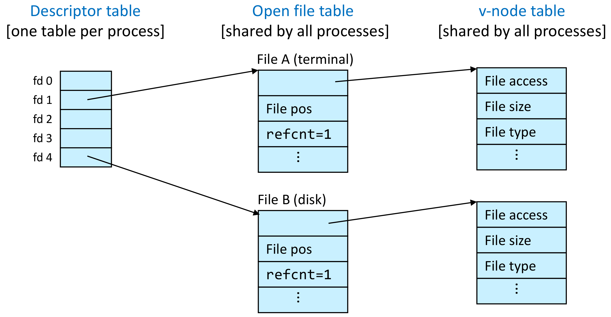
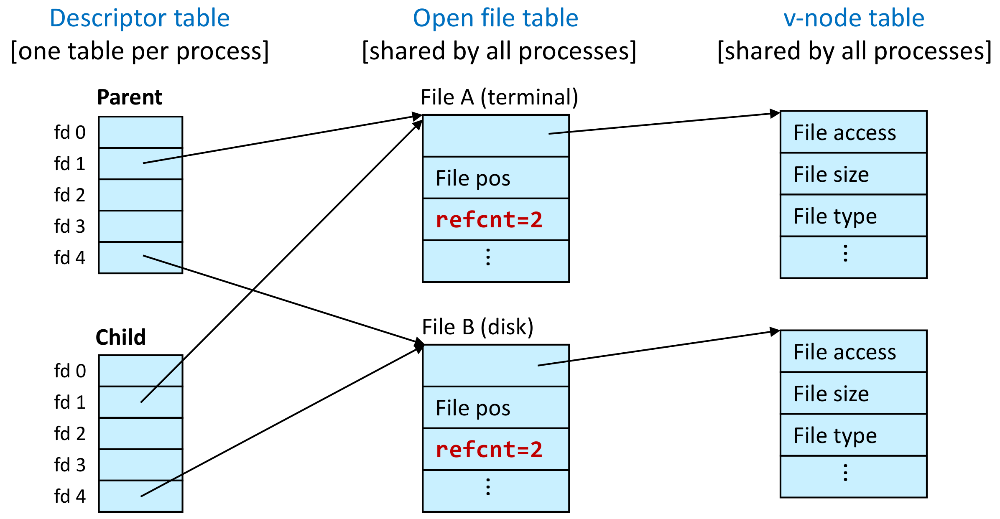
- 복사되는 것은 디스크립터 테이블뿐입니다. 그래서 부모와 자식의 같은 fd 번호는 같은 열린 파일 항목을 가리키고, 그 항목의 파일 위치도 하나입니다. 한쪽이 읽거나 쓰면 다른 쪽이 보는 위치도 함께 움직입니다.
- 참조 횟수가 2가 됩니다. 커널은 열린 파일 항목을 가리키는 디스크립터가 모두 닫혀 참조 횟수가 0이 될 때에야 그 항목을 해제합니다. 따라서 한쪽이
close해도 다른 쪽은 계속 쓸 수 있습니다. - 셸에서 실행한 프로그램이 셸과 같은 터미널에 출력하는 것도 이 상속 덕분입니다. 부모의 fd 1(터미널)이 자식에게 그대로 물려지기 때문입니다.
4.5 열린 파일 공유 실험 (Process Creation: fork() and open files demo)
열린 파일이 정말 공유되는지 fork3.c로 확인합니다.
void read_bytes(int fd, int n)
{
char c;
while ((n == -1) || (n-- > 0)) { // n == -1이면 파일 끝까지
if (read(fd, &c, 1) < 1) break; // 파일 끝이면 멈춘다
printf("[%5d] %c\n", getpid(), c);
sleep(2);
}
}
int main(int argc, char *argv[])
{
int fd = argc == 1 ? STDIN_FILENO : open(argv[1], O_RDONLY);
if (fd < 0) return EXIT_FAILURE;
read_bytes(fd, 3); // fork 전에 3바이트
pid_t pid = fork();
if (pid > 0) { // parent
sleep(1); // 자식보다 1초 늦게 출발
read_bytes(fd, -1);
} else if (pid == 0) { // child
read_bytes(fd, -1);
}
return pid < 0 ? EXIT_FAILURE : EXIT_SUCCESS;
}$ echo "1234567890" | ./fork3
[21156] 1
[21156] 2
[21156] 3
[21297] 4
[21156] 5
[21297] 6
[21156] 7
[21297] 8
[21156] 9
[21297] 0
[21156]
$슬라이드는 부모(21156)의 줄을 파란색, 자식(21297)의 줄을 빨간색으로 칠해 두었습니다. 입력은 echo가 보낸 11바이트(1234567890과 줄바꿈 문자)입니다.
fork 후 경과 시간 |
읽는 프로세스 | 읽은 바이트 |
|---|---|---|
(fork 전) |
부모 | 1, 2, 3 |
| 0초 | 자식 | 4 |
| 1초 | 부모 | 5 |
| 2초 | 자식 | 6 |
| 3초 | 부모 | 7 |
| 4초 | 자식 | 8 |
| 5초 | 부모 | 9 |
| 6초 | 자식 | 0 |
| 7초 | 부모 | 줄바꿈 문자 — [21156] 뒤에 줄바꿈이 찍히고 형식 문자열의 \n이 한 번 더 찍혀 빈 줄이 생깁니다 |
| 8초 · 9초 | 자식 · 부모 | read가 0을 반환(파일 끝) → 각자 종료 |
- 모든 바이트가 정확히 한 번씩만 읽혔습니다. 두 프로세스가 하나의 입력을 나누어 읽은 것입니다.
- 1초 엇갈린 출발과 2초 간격의 잠 때문에 두 프로세스가 1초씩 번갈아 읽어 교대 패턴이 나옵니다.
- 다만 이 실행의 입력은 파이프라는 점에 주의해야 합니다. 파이프에는 파일 위치가 없고(
lseek을 부르면ESPIPE로 실패합니다), 읽힌 바이트는 파이프 버퍼에서 빠져나갑니다. 그래서 파이프에서는 위치 공유와 상관없이 한 바이트를 한 프로세스만 읽습니다. - 공유되는 파일 위치를 직접 보여 주는 것은 일반 파일을 인자로 줄 때(
./fork3 file)입니다. 이때도 같은 교대 패턴이 나오는데, 부모가fork전에 연 열린 파일 항목 하나와 그 파일 위치를 두 프로세스가 함께 앞으로 옮기기 때문입니다. 자식이4를 읽으면 공유된 위치가 앞으로 가서 부모는5부터 읽습니다. 만약fork가 열린 파일 항목까지 복사해 두 프로세스가 위치(3)를 따로 가졌다면, 둘 다4567890과 줄바꿈 문자를 전부 읽었을 것입니다.
4.6 fork()와 가상 메모리 (Process Creation: fork() and virtual memory)
4.2절의 “1:1 복사”를 글자 그대로 하면 fork는 부모 메모리 전체를 복사해야 합니다. 큰 프로그램이라면 비싸고, 특히 7장처럼 자식이 곧바로 execve로 주소 공간을 버린다면 그 복사는 통째로 낭비입니다. 그래서 실제 fork는 다음과 같이 동작합니다.
- 부모의 페이지 테이블의 사본만 만듭니다.
- 실제 메모리 페이지는 복사하지 않고 COW(copy-on-write, 쓰기 시 복사)로 표시합니다.
- 페이지를 읽기 전용(read-only)으로 표시합니다.
- 페이지 폴트 처리기(page fault handler)가 폴트가 난 페이지가 COW 페이지인지 확인합니다.
- 리눅스에서는
linux/mm/memory.c::do_cow_fault()에 구현되어 있습니다.
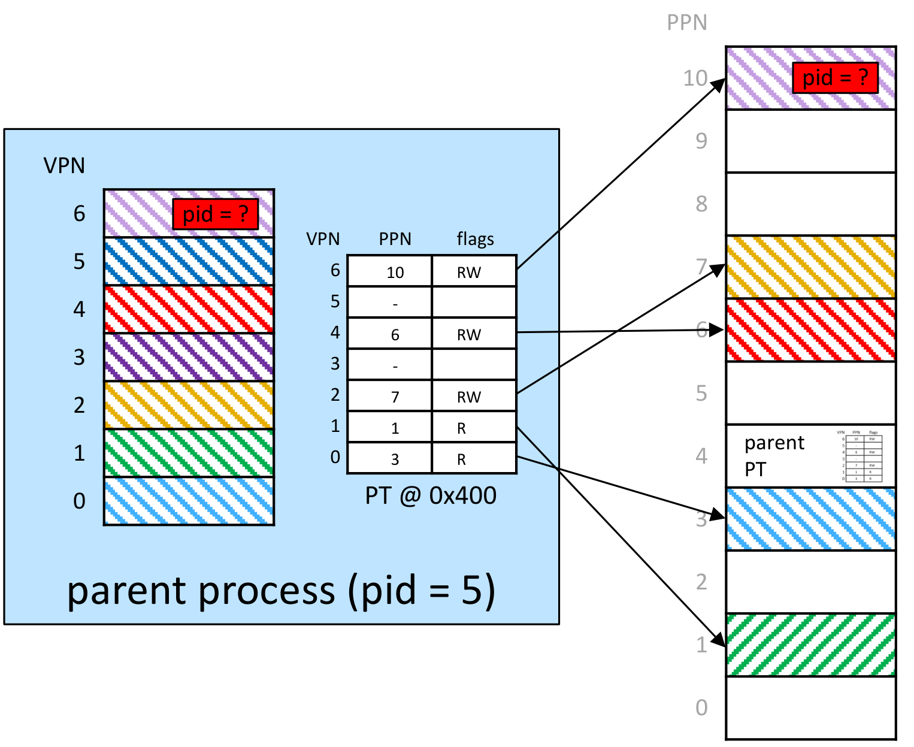
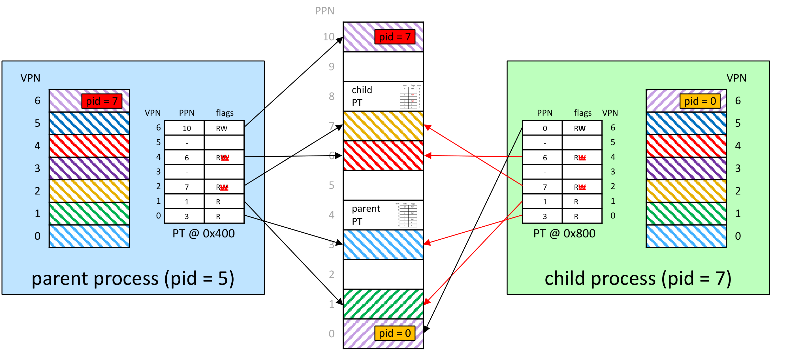
두 그림 사이에 일어난 일을 순서대로 적으면 다음과 같습니다.
fork는 페이지 테이블만 복사합니다. 부모의 페이지 테이블(물리 프레임 4, 주소 0x400)을 새 프레임 8(주소 0x800)에 복사해 자식의 페이지 테이블로 삼습니다. 그림의 약속대로라면 프레임 하나의 크기는 0x100바이트입니다. 데이터 페이지는 한 장도 복사하지 않습니다.- 쓰기 가능한 페이지를 양쪽 모두 읽기 전용으로 바꿉니다. 원래 RW였던 VPN 2 · VPN 4 · VPN 6의 W 비트를 부모와 자식의 페이지 테이블에서 모두 지웁니다. 이제 두 프로세스가 같은 프레임을 가리키지만 어느 쪽도 그 프레임에 쓸 수 없습니다. 두 번째 그림에서 VPN 6에만 취소선이 없는 것은, 아래 4–5단계를 거쳐 W가 이미 되살아난 뒤의 모습이기 때문입니다.
- 읽기는 그대로 성공합니다. 공유된 프레임을 읽는 것은 아무 문제가 없으므로, 읽기만 하는 페이지는 끝까지 복사되지 않습니다. 원래 읽기 전용인 VPN 0과 VPN 1이 그런 페이지이며, 코드 페이지가 대표적인 예입니다.
- 쓰기는 페이지 폴트를 일으킵니다.
pid = fork()는 반환값을 스택의pid에 씁니다. 읽기 전용 페이지에 대한 쓰기이므로 보호 폴트가 납니다. - 폴트 처리기가 COW 페이지임을 알아보고 복사합니다. 원래는 쓰기 가능한 영역인데 COW 때문에 잠시 읽기 전용으로 바꿔 둔 페이지라는 것을 확인하면, 그 프레임을 아직 다른 프로세스와 공유하고 있는 경우 새 프레임을 할당해 내용을 복사하고, 쓰려던 프로세스의 매핑을 새 프레임으로 바꾸며 W를 되살립니다. 그다음 쓰기 명령을 다시 실행합니다. 그림의 결과는 자식이 먼저 쓴 경우에 해당합니다. 자식의 폴트에서 새 프레임 PPN 0이 할당되어 자식의
pid = 0이 그곳에 쓰이고, 그 뒤에는 PPN 10을 가리키는 프로세스가 부모뿐이므로 부모의 폴트는 복사 없이 W만 되살린 뒤 PPN 10에pid = 7을 씁니다.
- 결과적으로 실제로 복사되는 것은 쓰인 페이지뿐이고, 그것도 쓰이는 순간에 복사됩니다. 4.2절의 “1:1 복사”는 이렇게 의미상으로만 지켜집니다. 각 프로세스는 자기만의 사본을 가진 것처럼 행동하고(4.3절의
a와b), 그 사본은 필요할 때에야 만들어집니다. - 이렇게 하면
fork직후 자식이execve를 부르는 흔한 경우에 복사 비용이 거의 0이 됩니다. 페이지 테이블 사본만 만들었다가execve가 그것마저 버리기 때문입니다. - 슬라이드가 가리키는 리눅스 함수에 대해 한 가지 덧붙입니다. v6.5의
mm/memory.c에서do_cow_fault()는 아직 매핑되지 않은 파일 기반 사적 매핑(private file mapping)의 페이지에 처음 쓸 때 사본을 만드는 경로입니다. 위 그림처럼 이미 매핑된 페이지에fork뒤 처음 쓰는 경우는 같은 파일의do_wp_page()가 처리하며, 실제 복사는 거기서 부르는wp_page_copy()가 하고, 그 페이지를 가리키는 프로세스가 하나만 남았으면wp_page_reuse()로 복사 없이 쓰기 권한만 되돌립니다. 둘 다 “쓰는 순간 사본을 만든다”는 같은 원리입니다.
4.7 fork()로 놀아 보기 (Fun with fork())
부모와 자식 모두 계속해서 fork할 수 있습니다. fork가 여러 번 나오면 프로세스가 몇 개 생기고 무엇이 몇 번 출력되는지 금세 헷갈리므로, 슬라이드는 프로세스 그래프(process graph)로 실행을 그립니다.
- 가로선 하나가 프로세스 하나의 실행이며, 시간은 왼쪽에서 오른쪽으로 흐릅니다.
- 위로 향하는 세로 화살표가
fork호출입니다. 화살표 끝에서 시작하는 새 가로선이 자식이고, 원래 가로선은 부모로서 계속됩니다. - 가로선 위의 글자(
L0,Bye등)는 그 프로세스가 그 시점에 출력하는 문자열입니다.
그래프에서 한 가로선 위의 출력은 왼쪽부터 순서대로 일어나고, 자식의 출력은 자식을 만든 fork보다 뒤에 일어납니다. 이 두 가지 순서만 지키면 서로 다른 프로세스의 출력은 스케줄러에 따라 어떻게든 섞일 수 있습니다. 따라서 가능한 출력 순서는 정확히 그래프의 꼭짓점을 화살표 방향과 모순되지 않게 한 줄로 늘어놓는 방법, 즉 위상 정렬(topological sort)입니다. 예를 들어 아래 fwf1에서 L0 L1 Bye Bye L1 Bye Bye는 가능하지만, L0 Bye …로 시작하는 출력은 불가능합니다. 어느 Bye든 그래프에서 L1 뒤에 있기 때문입니다. 원래 프로세스와 첫 자식의 Bye는 자기 가로선의 L1 뒤에 있고, 두 번째 fork로 생긴 두 자식의 Bye는 그 자식을 만든 fork가 부모 가로선의 L1 뒤에 있으므로 역시 L1 뒤에 옵니다.
fwf1 — fork 두 번
void fwf1()
{
printf("L0\n");
fork();
printf("L1\n");
fork();
printf("Bye\n");
}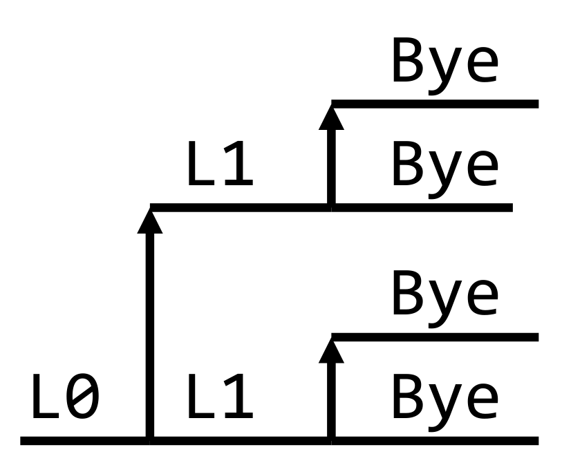
fork가 한 번 실행될 때마다 그 지점에 살아 있는 프로세스 수가 두 배가 됩니다. 1개 → 2개 → 4개입니다.- 출력:
L01번,L12번,Bye4번.
fwf2 — fork 세 번
void fwf2()
{
printf("L0\n");
fork();
printf("L1\n");
fork();
printf("L2\n");
fork();
printf("Bye\n");
}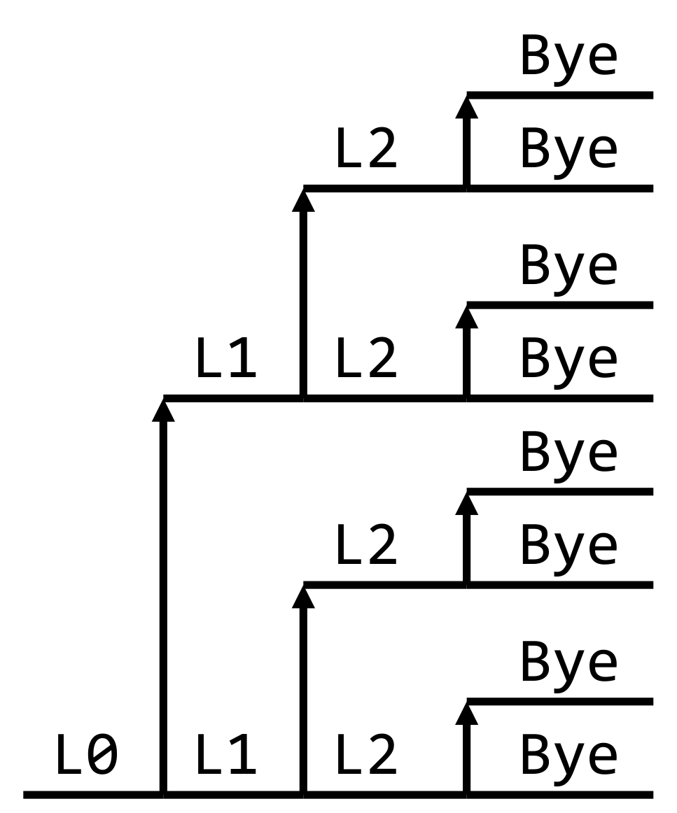
- 출력:
L01번,L12번,L24번,Bye8번. 일반적으로fork를 조건 없이 \(n\)번 연달아 부르면 프로세스는 \(2^n\)개가 됩니다.
fwf3 — 부모만 계속 fork
void fwf3()
{
printf("L0\n");
if (fork() != 0) {
printf("L1\n");
if (fork() != 0) {
printf("L2\n");
fork();
}
}
printf("Bye\n");
}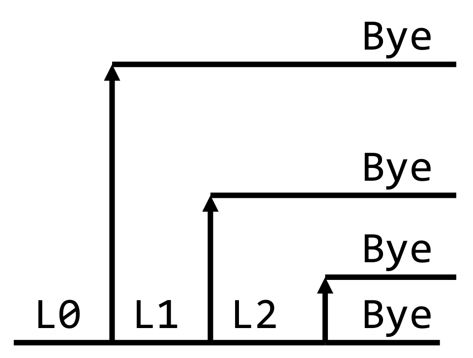
fork() != 0은 부모일 때 참입니다(자식은 0을 받습니다). 그래서 if 블록 안으로 계속 들어가는 것은 원래 프로세스뿐이고, 자식들은 태어나자마자 바깥의printf("Bye\n")로 갑니다.- 출력:
L0,L1,L2각 1번,Bye4번.fork는 세 번 실행되므로 프로세스는 4개입니다.
fwf4 — 자식만 계속 fork
void fwf4()
{
printf("L0\n");
if (fork() == 0) {
printf("L1\n");
if (fork() == 0) {
printf("L2\n");
fork();
}
}
printf("Bye\n");
}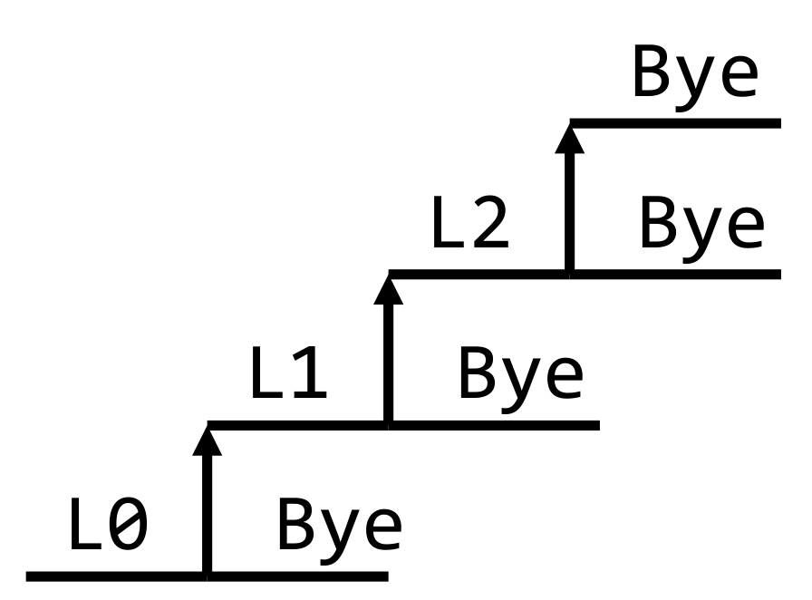
fork() == 0은 자식일 때 참입니다. 이번에는 부모가 곧바로Bye로 빠지고, 새로 태어난 자식이 다음 단계로 나아갑니다.- 출력은
fwf3과 같은 개수(L0·L1·L2각 1번,Bye4번)이지만,L1과L2를 출력하는 것이 원래 프로세스가 아니라 자식과 손자라는 점이 다릅니다. 두 그래프의 모양(빗 모양과 계단 모양)이 그 차이를 그대로 보여 줍니다.
fwf5 — 포크 폭탄
void fwf5()
{
int level = 0;
while (1) {
printf("[%5d] level %d\n", getpid(), level++);
fork();
}
}- 슬라이드의
printf형식 문자열은 둥근 따옴표(“ ”)로 적혀 있어 그대로는 컴파일되지 않으므로, 위 코드에서는 곧은 따옴표로 바꿨습니다. - 반복할 때마다 살아 있는 모든 프로세스가
fork하므로 프로세스 수가 매 반복 두 배가 됩니다.level\(k\) 줄은 \(2^k\)개의 프로세스가 출력하고, 반복이 끝나지 않으므로 프로세스는 자원이 바닥날 때까지 지수적으로 늘어납니다. - 이것이 이른바 “포크 폭탄(fork bomb)”입니다.
- 팁: 이 프로그램은 제한된 환경에서만 실행하십시오!
$ ulimit -u 4096
$ ./fwf5ulimit -u는 한 사용자가 가질 수 있는 최대 프로세스 수를 정하는 셸 내장 명령입니다. 한도에 닿으면fork가-1을 반환해 더는 프로세스가 생기지 않으므로 시스템 전체가 마비되는 일은 막을 수 있습니다.- 다만
fwf5는fork의 반환값을 확인하지 않으므로, 이미 생긴 프로세스들은 실패한fork를 무시하고 계속 출력하며 돕니다. 한도는 피해를 가두는 장치일 뿐이고, 이 프로세스들은 따로 종료시켜야 합니다.
위의 출력 횟수는 표준 출력이 터미널일 때의 이야기입니다. 터미널로 가는 stdout은 줄 단위로 버퍼링되어 \n을 만날 때마다 비워지지만, 파이프나 파일로 가는 stdout은 버퍼가 찰 때나 프로그램이 끝날 때에야 비워집니다. 그런데 printf의 버퍼는 프로세스의 주소 공간 안에 있으므로 fork가 그것까지 복사합니다. 그래서 ./fwf1 | cat처럼 실행하면, 아직 비워지지 않은 "L0\n"이 네 프로세스의 버퍼에 모두 들어 있다가 각자 종료할 때 출력되어 L0가 4번, L1도 4번 찍힙니다. fork 전에 fflush(stdout)을 부르면 이 문제가 사라집니다.
5. 프로세스 종료 (Process Termination)
5.1 종료의 경로 (Process Termination)
프로세스는 운영체제에 자신을 제거해 달라고 요청하며 끝납니다.
main()에서 반환하거나,exit()이나abort()를 호출합니다.abort()는 비정상적인 프로그램 종료로,atexit()으로 등록한 함수 같은 정리 작업(cleanup)을 하지 않습니다.
- 끝난 프로세스의 자원은 운영체제가 회수합니다. 메모리와 열린 파일 등이 여기에 해당합니다.
- 그러나 종료 상태와 그 밖의 통계 정보(즉 PCB)는 커널이 계속 보관합니다 — 그래서 “좀비(zombie)”라고 부릅니다.
- 무엇이 보관되는지는
wait4()의 마지막 매개변수 자료형이struct rusage*라는 데서 알 수 있습니다.wait4(pid, &status, options, &rusage)는 자식의 종료 상태와 함께 자식이 쓴 CPU 시간 같은 자원 사용량(resource usage)을 돌려주므로, 커널은 그 정보를 부모가 물어볼 때까지 남겨 두어야 합니다.
- 무엇이 보관되는지는
- 부모가 자식의 종료 상태를 조회하면 커널은 PCB를 제거합니다.
- 이 과정을 수확(reaping)이라고 부르며,
waitpid()로 이루어집니다(6장).
- 이 과정을 수확(reaping)이라고 부르며,
부모는 자식 프로세스의 실행을 끝낼 수도 있습니다.
- 자식에게 종료 시그널을 보냅니다. 예:
kill(ch_pid, SIGTERM); - 부모가 먼저 끝나면
- 자식들은 부모가 init(PID 1)으로 바뀐 채 계속 실행됩니다. 이것이 기본 동작입니다(5.3절).
prctl()을 쓰면 모든 자식도 함께 끝나게 만들 수 있습니다. 리눅스의prctl(PR_SET_PDEATHSIG, SIGKILL)처럼, 자식 쪽에서 “부모가 죽으면 받을 시그널”을 등록해 두는 방식입니다.
5.2 exit()과 atexit() (Process Termination)
void exit(int status)
status의 마지막 바이트만 보관됩니다. 부모가 받는 종료 상태는 \(\mathtt{status} \mathbin{\&} \mathtt{0xFF}\), 즉 0–255 사이의 값입니다. 예를 들어exit(256)은 부모에게 0으로,exit(-1)은 255로 보입니다.- 관례: 성공적인 종료는
EXIT_SUCCESS, 그 밖에는EXIT_FAILURE를 씁니다.
int atexit(void (*function)(void))
- 종료할 때 연쇄적으로 실행될 함수(들)를 등록합니다. 등록한 함수들은
exit이 불릴 때(또는main에서 반환할 때) 등록의 역순으로 호출됩니다.
void cleanup1(void) { printf("[%5d] cleanup1\n", getpid()); }
void cleanup2(void) { printf("[%5d] cleanup2\n", getpid()); }
int main(int argc, char *argv[])
{
atexit(cleanup1); // 먼저 등록
atexit(cleanup2); // 나중에 등록 → 먼저 호출
fork();
exit(EXIT_SUCCESS);
}$ ./exit1
[ 4520] cleanup2
[ 4520] cleanup1
[ 4521] cleanup2
[ 4521] cleanup1- 역순 호출: 두 프로세스 모두 나중에 등록한
cleanup2를 먼저 부릅니다. 정리 작업이 대개 초기화의 역순이어야 하므로 스택처럼 동작하는 것이 자연스럽습니다. - 등록도 상속됩니다:
atexit은fork전에 부모가 한 번만 호출했지만, 등록 목록은 주소 공간 안에 있으므로 4.2절의 1:1 복사로 자식에게도 넘어갑니다. 그래서 자식(4521)도 두 함수를 모두 실행합니다. - 부모(4520)의 출력이 먼저 나온 것은 이번 실행의 스케줄링 결과이며 보장되지 않습니다.
exit은 이렇게 등록된 함수를 호출하고 4.7절에서 말한stdio버퍼를 비운 뒤에야 커널에 종료를 요청합니다. 5.1절의abort가 “정리 작업 없이” 끝난다는 것은 바로 이 단계를 건너뛴다는 뜻입니다.
5.3 부모가 먼저 끝나면 (Process Termination)
부모가 자식보다 먼저 끝나면, init 프로세스(PID 1)가 새 부모로 지정됩니다.
- init: PID 0(idle/swapper 프로세스)이 만든 첫 번째 사용자 수준 프로세스입니다.
- init의 역할은 초기화, 필수 서비스 시작, 고아 수확(reaping orphans), 종료 · 재부팅입니다.
- root도 init을 죽일 수 없습니다.
int main(int argc, char *argv[])
{
pid_t pid = fork();
if (pid > 0) {
sleep(5); // 부모: 5초 뒤 끝남
printf("Parent terminates.\n");
} else if (pid == 0) { // 자식: 1초마다 부모의 PID 출력
while (1) {
sleep(1);
printf("Parent's PID is %d.\n", getppid());
}
}
return EXIT_SUCCESS;
}$ ./exit2
Parent's PID is 8864.
Parent's PID is 8864.
Parent's PID is 8864.
Parent's PID is 8864.
Parent terminates.
$ Parent's PID is 1.
Parent's PID is 1.
Parent's PID is 1.
Parent's PID is 1.
…- 처음 4초 동안 자식은 부모의 PID 8864를 찍습니다.
- 다만 5초 무렵에는 자식의 다섯 번째
sleep(1)과 부모의sleep(5)가 거의 동시에 끝나므로 순서가 보장되지 않습니다. 슬라이드의 실행에서는 자식이 조금 늦게 깨어 부모가 끝난 뒤에 찍었지만, 자식이 먼저 깨면Parent terminates.앞에 8864가 찍힌 줄이 하나 더 나옵니다. - 5초째에 부모가
Parent terminates.를 찍고 끝나면, 셸은 자신이 실행한 프로세스(부모)가 끝났으므로 곧바로 프롬프트$를 냅니다. 자식은 셸이 기다리는 대상이 아니므로 계속 살아서, 프롬프트 바로 뒤에 출력을 이어 붙입니다. - 그때부터
getppid()는 1을 돌려줍니다. 부모를 잃은 고아(orphan) 자식이 init에 입양된 것입니다. 이 자식은 무한 루프이므로 직접 종료시키기 전까지 계속 찍습니다.
슬라이드가 init 입양을 “기본 동작(default)”이라고 한 것과 이어지는 이야기입니다. 리눅스에서는 어떤 프로세스가 prctl(PR_SET_CHILD_SUBREAPER, 1)로 자신을 대리 수확자(subreaper)로 등록할 수 있고, 고아의 조상 중에 살아 있는 대리 수확자가 있으면 고아는 init 대신 가장 가까운 대리 수확자에게 입양됩니다. 그래서 환경에 따라 exit2를 실행하면 Parent's PID is 1. 대신 다른 PID가 찍힐 수 있습니다. 원리는 같습니다 — 고아는 반드시 누군가에게 입양되고, 그 입양자가 고아를 수확합니다.
5.4 좀비 (Zombies)
프로세스는 끝난 뒤에도 여전히 시스템 자원을 소비합니다.
- 운영체제가 유지하는 여러 테이블의 자리를 차지합니다.
- 부모 프로세스에게 종료 상태와 그 밖의 통계 정보를 돌려주기 위해서입니다.
수확 (Reaping)
- 끝난 자식에 대해 부모가 수행합니다.
- 부모는 종료 상태 정보를 받습니다.
- 커널은 그 프로세스를 버립니다.
실행은 끝났지만 아직 부모가 수확하지 않아 커널에 PCB가 남아 있는 프로세스를 좀비(zombie)라고 합니다. 부모가 waitpid 계열 호출로 좀비의 종료 상태를 받아 가고 커널이 그 PCB를 제거하는 일을 수확(reaping)이라고 합니다.
부모가 수확하지 않으면 어떻게 될까요?
- 어떤 부모든 자식을 수확하지 않고 끝나면, 그 자식은 init 프로세스가 수확합니다. 5.3절대로 init이 새 부모가 되고, init은 입양한 좀비를 거두어 가기 때문입니다.
- 따라서 명시적인 수확은 오래 실행되는 프로세스에서만 필요합니다.
- 예: 셸과 서버. 이런 프로세스는 끝나지 않으므로 init에게 뒤처리를 넘길 기회가 없고, 자식을 수확하지 않으면 좀비가 계속 쌓여 PID와 커널 테이블을 차지합니다.
5.5 좀비와 놀아 보기 (Fun with Zombies)
자식이 먼저 끝나는 경우 — 좀비
int main(int argc, char *argv[]) {
pid_t pid = fork();
if (pid == 0) {
printf("[%5d] child exits\n", getpid());
exit(EXIT_SUCCESS); // 자식: 곧바로 끝남
} else if (pid > 0) { // 부모: 끝나지도 수확하지도 않음
printf("[%5d] parent runs\n", getpid());
while (1); // inifinite loop
}
}$ ./zombie1 &
[1] 11500
$ [11500] parent runs
[11501] child exits
ps
PID TTY TIME CMD
11500 pts/4 00:00:04 zombie1
11501 pts/4 00:00:00 zombie1 <defunct>
11518 pts/4 00:00:00 ps
12542 pts/4 00:00:00 bash
$ kill 11500
$ ps
PID TTY TIME CMD
11628 pts/4 00:00:00 ps
12542 pts/4 00:00:00 bash
[1]+ Terminated ./zombie1
$&로 백그라운드에서 실행했으므로 셸이 작업 번호[1]과 PID 11500을 알려 주고 곧바로 프롬프트를 냅니다. 그 뒤에 프로그램의 출력이 섞여 나오고, 사용자는 그 상태에서ps를 입력했습니다.ps는 좀비를<defunct>로 보여 줍니다. 자식 11501은 이미exit했지만 부모가 수확하지 않았으므로 목록에 남아 있습니다. 부모 11500의TIME이 4초인 것은while (1);로 CPU를 계속 쓰고 있기 때문입니다.- 부모를 죽이면 init이 좀비 자식의 새 부모가 되고, 이어서 그 자식을 수확합니다.
kill 11500뒤의ps에는 부모도 좀비도 없습니다. 마지막 줄[1]+ Terminated는 백그라운드 작업이 시그널로 끝났다는 셸의 알림입니다.
부모가 먼저 끝나는 경우 — 고아
int main(int argc, char *argv[]) {
pid_t pid = fork();
if (pid == 0) { // 자식: 끝나지 않음
printf("[%5d] child runs\n", getpid());
while (1); // inifinite loop
} else if (pid > 0) {
printf("[%5d] parent exits\n", getpid());
exit(EXIT_SUCCESS); // 부모: 곧바로 끝남
}
}$ ./zombie2
[12623] parent exits
[12624] child runs
$ ps
PID TTY TIME CMD
12542 pts/4 00:00:00 bash
12624 pts/4 00:00:04 zombie2
12643 pts/4 00:00:00 ps
$ kill 12624
$ ps
PID TTY TIME CMD
12542 pts/4 00:00:00 bash
12680 pts/4 00:00:00 ps
$- 부모가 끝났는데도 자식 프로세스는 여전히 실행 중입니다.
ps에<defunct>가 아닌 평범한zombie2(12624)로 보입니다.TIME이 4초인 것은while (1);로 CPU를 계속 쓰고 있기 때문입니다. 이 자식은 좀비가 아니라 init에 입양된 고아입니다. - 자식은 스스로 끝나거나 죽임을 당할 때까지 계속 실행됩니다. 그래서
kill 12624로 직접 끝내야 했습니다. - 백그라운드로 실행하지 않았는데도 프롬프트가 바로 돌아온 것은, 셸이 기다리던 프로세스(부모 12623)가 끝났기 때문입니다. 5.3절의
exit2와 같은 상황입니다.
두 실험을 나란히 놓으면 다음과 같습니다.
zombie1 |
zombie2 |
|
|---|---|---|
| 먼저 끝나는 쪽 | 자식 | 부모 |
| 남은 자식의 상태 | 좀비 — 실행은 끝났고 PCB만 남음(<defunct>) |
고아 — 아직 실행 중이며 init에 입양됨 |
| 정리되는 방법 | 부모가 수확하거나, 부모가 죽으면 init이 수확 | 자식이 스스로 끝나거나 죽임을 당한 뒤 init이 수확 |
(코드 주석의 inifinite는 슬라이드 원문의 철자 그대로입니다.)
6. 자식과의 동기화 (Synchronizing with Children)
6.1 waitpid()와 wait() (Synchronizing with (Waiting for) Children)
pid_t waitpid(pid_t pid, int *wstatus, int options)
pid_t wait(int *wstatus)- PID가
pid인 자식, 또는 자식 중 아무나 하나가 끝날 때까지 현재 프로세스를 멈춥니다(suspend). - 반환값은 끝난 자식 프로세스의 PID입니다.
wstatus != NULL이면, 그것이 가리키는 정수에 자식의 종료 상태와 자식이 왜 끝났는지를 나타내는 플래그가 담깁니다.
int waitid(idtype_t idtype, id_t id, siginfo_t *infop, int options)- 어떤 자식의 어떤 상태 변화를 기다릴지 더 정밀하게 제어할 수 있습니다.
- 자세한 내용은
man 2 waitid를 보십시오.
wait(&status)는 waitpid(-1, &status, 0)과 같습니다. 즉 wait은 “자식 중 아무나 하나”를, waitpid는 첫 인자로 기다릴 대상을 고릅니다.
pid 인자 |
기다리는 대상 |
|---|---|
> 0 |
PID가 정확히 pid인 자식 |
-1 |
자식 중 아무나 (wait과 같음) |
0 |
호출한 프로세스와 같은 프로세스 그룹에 속한 자식 중 아무나 |
< -1 |
프로세스 그룹 ID가 \(\lvert \mathtt{pid} \rvert\)인 자식 중 아무나 |
options가 0이면 대상 자식이 끝날 때까지 멈추고,WNOHANG이면 끝난 자식이 없을 때 멈추지 않고 곧바로 0을 반환합니다. 대상 자식이 이미 좀비라면 멈추지 않고 즉시 수확해 반환하며, 기다릴 자식이 아예 없으면-1을 반환합니다.- 종료 상태 정수는 그대로 읽지 않고 매크로로 해석합니다 —
WIFEXITED(status)는 자식이exit이나main의 반환으로 정상 종료했으면 참이고, 그때WEXITSTATUS(status)가 5.2절의 하위 1바이트 종료 상태를 꺼냅니다. 시그널로 죽었으면WIFSIGNALED(status)가 참이고WTERMSIG(status)가 그 시그널 번호입니다.
6.2 자식 하나 기다리기 (Synchronizing with Children: wait1.c)
int main(int argc, char *argv[]) {
pid_t pid = fork();
if (pid == -1) return EXIT_FAILURE;
if (pid == 0) {
printf("[%5d] hello from child.\n", getpid());
} else {
int status;
printf("[%5d] hello from parent.\n", getpid());
wait(&status); // 자식이 끝날 때까지 멈춘다
printf("[%5d] child %d has terminated with status %d.\n",
getpid(), pid, WEXITSTATUS(status));
}
printf("Bye\n");
return EXIT_SUCCESS;
}$ ./wait1
[21808] hello from parent.
[21809] hello from child.
Bye
[21808] child 21809 has terminated with status 0.
Bye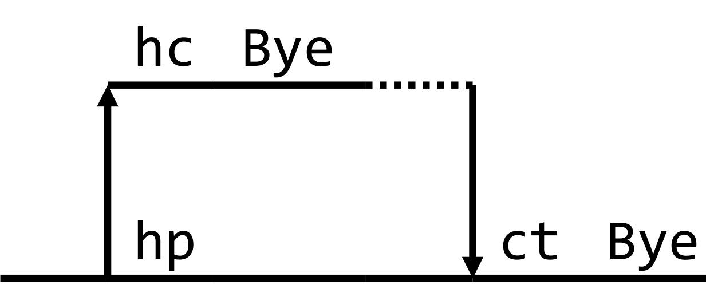
4.7절의 위상 정렬로 가능한 출력을 모두 세어 보면 세 가지입니다.
| 가능한 순서 | 설명 |
|---|---|
hp → hc → Bye → ct → Bye |
슬라이드의 실행 결과 |
hc → hp → Bye → ct → Bye |
자식의 hc가 먼저 찍히고, 부모의 hp가 자식의 Bye보다 먼저 찍힌 경우 |
hc → Bye → hp → ct → Bye |
부모의 hp가 자식의 두 줄보다 모두 늦게 찍힌 경우(예: fork 직후 자식이 먼저 스케줄되어 끝까지 실행된 경우) |
- 어떤 경우에도
ct는 자식의Bye뒤에 옵니다.wait이 자식의 종료를 기다리기 때문입니다. 이것이 “동기화(synchronizing)”의 의미입니다. - 종료 상태 0은 자식이
main에서EXIT_SUCCESS를 반환했기 때문이고,WEXITSTATUS로 꺼냈습니다. - 출력의
child 21809는wait의 반환값이 아니라fork가 돌려준pid를 찍은 것입니다. 자식이 하나뿐이므로 둘은 같습니다.
6.3 여러 자식 기다리기: wait() (Synchronizing with Children: wait2.c)
- 여러 자식이 끝났다면
wait()은 그들을 임의의 순서로 돌려줍니다. WIFEXITED와WEXITSTATUS매크로로 종료 상태 정보를 얻습니다.
#define N 10
int main(int argc, char *argv[])
{
pid_t pid[N];
for (int i=0; i<N; i++)
if ((pid[i] = fork()) == 0) {
int K=random() % (1<<20);
for (int k=0; k<K; k++); // 빈 루프로 시간을 끈다
exit(100+i); // 루프가 끝난 뒤 한 번 실행
}
for (int i=0; i<N; i++) {
int status;
pid_t wpid = wait(&status); // 아무 자식이나 하나
printf("Child %d terminated ", wpid);
if (WIFEXITED(status)) printf("with status %d\n",
WEXITSTATUS(status));
else printf("abnormally\n");
}
return EXIT_SUCCESS;
}$ ./wait2
Child 27522 terminated with status 100
Child 27523 terminated with status 101
Child 27524 terminated with status 102
Child 27526 terminated with status 104
Child 27529 terminated with status 107
Child 27528 terminated with status 106
Child 27527 terminated with status 105
Child 27531 terminated with status 109
Child 27530 terminated with status 108
Child 27525 terminated with status 103- 자식 \(i\)는
exit(100+i)로 끝나므로 종료 상태가 곧 자식의 번호입니다. 출력의 PID와 상태를 맞춰 보면 언제나 \(\mathrm{PID} - 27522 = \mathrm{status} - 100\)이므로, 자식 \(i\)의 PID가 \(27522 + i\)로 연속해서 배정되었음을 알 수 있습니다. - 그런데 수확된 순서는 100, 101, 102, 104, 107, 106, 105, 109, 108, 103으로 만들어진 순서와 다릅니다.
wait은 먼저 끝난(또는 커널이 먼저 찾은) 자식부터 돌려주기 때문입니다. for (int k=0; k<K; k++);의 세미콜론이 빈 루프 몸체입니다. 다음 줄의exit(100+i);는 루프 안처럼 들여쓰여 있지만 실제로는 루프가 끝난 뒤 한 번 실행됩니다.
random()은 시드를 주지 않으면 항상 같은 수열을 냅니다. 이 프로그램에서 부모는 fork 전에 random()을 한 번도 부르지 않으므로, 열 명의 자식은 모두 같은 난수 생성기 상태를 복사받고, 각자 처음 부르는 random()에서 같은 값을 얻습니다. 즉 모든 자식이 같은 횟수만큼 루프를 돌며, 위 출력의 뒤섞인 순서는 루프 길이의 차이가 아니라 스케줄링만으로 생긴 것입니다. 게다가 이 루프는 아무 효과가 없으므로 최적화 옵션을 주고 컴파일하면 컴파일러가 루프를 통째로 지울 수 있습니다. 자식마다 다른 길이를 의도했다면 자식 안에서 srandom(getpid())처럼 서로 다른 시드를 주어야 합니다.
6.4 특정 자식 기다리기: waitpid() (Synchronizing with Children: wait3.c)
waitpid(pid_t pid, …)로 PID가pid인 자식을 기다립니다.- 자세한 내용은 man 페이지를 보십시오.
wait3.c는 wait2.c에서 수확하는 줄 하나만 바꿉니다.
pid_t wpid = waitpid(pid[i], &status, 0); // i번째 자식을 지목$ ./wait3
Child 28296 terminated with status 100
Child 28297 terminated with status 101
Child 28298 terminated with status 102
Child 28299 terminated with status 103
Child 28300 terminated with status 104
Child 28301 terminated with status 105
Child 28302 terminated with status 106
Child 28303 terminated with status 107
Child 28304 terminated with status 108
Child 28305 terminated with status 109- 이번에는 만든 순서대로 수확됩니다. 부모가
pid[0],pid[1], …을 차례로 지목해 기다리기 때문입니다. - 자식들이 끝나는 순서가 바뀐 것은 아닙니다. 예를 들어 자식 4가 자식 3보다 먼저 끝났다면, 자식 4는 부모가 자식 3을 수확하고 자기 차례가 올 때까지 잠시 좀비로 기다리다가, 차례가 오면 6.1절대로
waitpid가 멈추지 않고 즉시 수확합니다.
7. 프로그램의 적재와 실행 (Loading and Running Programs)
7.1 execve() (Loading and Running Programs)
int execve(char *pathname, char *argv[], char *envp[])- 다른 실행 파일을 찾아(locates), 적재하고(loads), 현재 프로세스 안에서 실행합니다(runs).
- 실행 파일의 경로
pathname - 인자 목록
argv - 환경 변수 목록
envp"key=value"형태의 문자열 목록입니다.- 프로그램 안에서는
getenv()와putenv()로 조회하고 설정합니다.
- 실행 파일의 경로
- 현재 프로세스의 주소 공간이 새 프로세스로 덮어쓰입니다.
- 코드, 데이터, 스택이 모두 새 프로그램의 것으로 바뀝니다.
- PID, 열린 파일, 시그널 문맥(signal context)은 유지됩니다. 다만 시그널 처리 함수를 등록해 둔 시그널은 기본 동작으로 되돌아갑니다(처리 함수의 코드가 덮어쓰여 사라지기 때문입니다). 무시하도록 설정한 시그널, 시그널 마스크, 대기 중인 시그널은 그대로 남습니다. 열린 파일도 close-on-exec 플래그(
FD_CLOEXEC)를 붙인 것은 이때 닫힙니다.
- 오류가 났을 때만 반환합니다. 성공하면 호출한 코드 자체가 사라졌으므로 돌아갈 곳이 없습니다.
fork가 “프로세스는 늘리되 프로그램은 그대로”였다면, execve는 정반대로 “프로세스는 그대로 두되 프로그램을 바꿉니다.” 12강에서 로더(loader)로 소개된 execve가 바로 이 호출이며, 실행 파일의 세그먼트를 새 주소 공간에 올리고 필요하면 동적 링커에게 제어를 넘기는 일이 이 안에서 일어납니다.
3.1절 표의 execl*, execv*는 execve를 감싼 C 라이브러리 함수들입니다. 실제 시스템 호출은 execve 하나이고, 나머지는 인자를 넘기는 방식만 다릅니다.
| 글자 | 의미 | 예 |
|---|---|---|
l (list) |
인자를 가변 인자로 하나씩 나열하고 널 포인터 (char *) NULL로 끝냄 |
execl("/bin/ls", "ls", "-l", (char *) NULL) |
v (vector) |
인자를 argv처럼 포인터 배열로 넘김 |
execv("/bin/ls", argv) |
p (path) |
경로에 /가 없으면 환경 변수 PATH의 디렉토리에서 실행 파일을 찾음 |
execvp("ls", argv) |
e (environment) |
환경 변수 목록을 직접 넘김. 없으면 현재 프로세스의 환경을 그대로 씀 | execve(path, argv, envp) |
3.2절의 일생 그림과 요약 슬라이드에 나오는 execv는 execve에서 환경 인자를 뺀 것으로, 현재 환경을 그대로 새 프로그램에 넘깁니다.
7.2 fork와 execve로 프로그램 실행하기 (Loading and Running Programs: execve.c)
int main(int argc, char *argv[], char *envp[]) // 셋째 인자: 환경
{
pid_t pid = fork();
char *exec_argv[] = {
"/bin/ls",
"-l",
"/usr/include",
NULL, // 목록의 끝 표시
};
if (pid == -1) return EXIT_FAILURE;
if (pid == 0) {
if (execve(exec_argv[0], exec_argv, envp) < 0) { // 실패해야 돌아옴
perror("Cannot execute program");
exit(EXIT_FAILURE);
}
} else {
int status;
if (wait(&status) > 0) {
printf("Process exited with status %d.\n", WEXITSTATUS(status));
}
}
return EXIT_SUCCESS;
}$ ./execve
total 11784
drwxr-xr-x 2 root root 4096 Aug 11 11:24 a52dec
drwxr-xr-x 2 root root 4096 Aug 11 13:28 acl
-rw-r--r-- 1 root root 1714 Aug 11 13:45 af_vfs.h
-rw-r--r-- 1 root root 7457 Aug 11 18:21 aio.h
-rw-r--r-- 1 root root 2032 Aug 11 18:21 aliases.h
-rw-r--r-- 1 root root 1204 Aug 11 18:20 alloca.h
drwxr-xr-x 3 root root 4096 Aug 11 12:08 alsa
...
-rw-r--r-- 1 root root 54355 Aug 11 11:22 yaml.h
-rw-r--r-- 1 root root 11500 Aug 11 11:09 zbuff.h
-rw-r--r-- 1 root root 16271 Aug 11 11:18 zconf.h
-rw-r--r-- 1 root root 17203 Aug 11 11:09 zdict.h
-rw-r--r-- 1 root root 96582 Aug 11 11:18 zlib.h
-rw-r--r-- 1 root root 119972 Aug 11 11:09 zstd.h
drwxr-xr-x 2 root root 4096 Aug 31 10:16 zzip
Process exited with status 0.- 이 프로그램은 3.2절 일생 그림을 그대로 코드로 옮긴 것입니다. 부모는
fork로 자식을 만들고, 자식은execve로/bin/ls -l /usr/include가 되며, 부모는wait으로 그 종료를 기다려 종료 상태를 출력합니다. 셸이 명령 하나를 실행하는 방식이 바로 이것입니다. - 자식은
ls가 되었지만 여전히 같은 프로세스입니다. PID가 그대로이므로 부모의wait이 그 종료를 받아 내고,ls가 정상적으로 끝나며 반환한 0이WEXITSTATUS로 전달되어 마지막 줄이 됩니다. ls의 출력이 같은 터미널에 나타나는 것은 열린 파일이 유지되기 때문입니다. 자식이fork로 부모의 fd 1을 물려받았고(4.4절),execve가 그 fd를 닫지 않았습니다.- 4.6절의 쓰기 시 복사 덕분에 이 패턴은 싸게 실행됩니다. 자식이
execve전까지 쓰는 페이지는 거의 없으므로 복사되는 페이지도 거의 없습니다.
7.3 인자 목록과 환경 목록 (Loading and Running Programs)
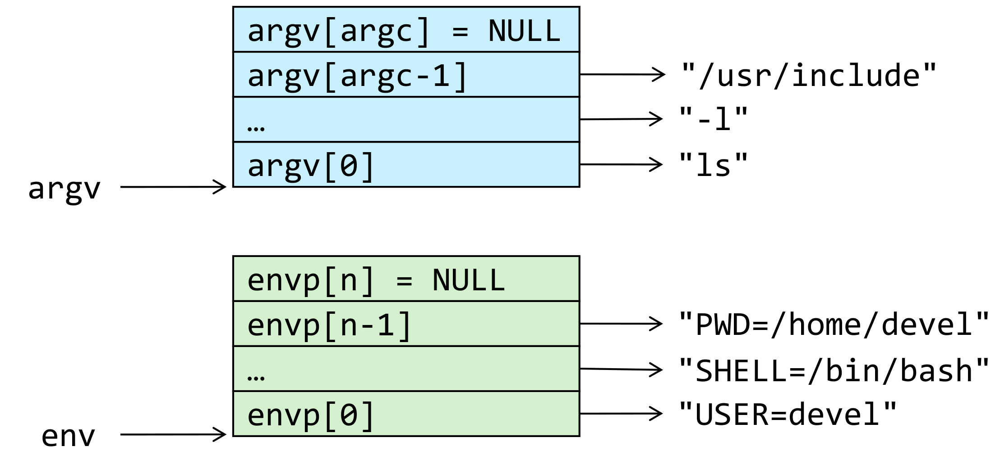
argv는NULL로 끝나는 포인터 배열입니다.argv[0]부터argv[argc-1]까지가 인자 문자열을 가리키고,argv[argc]는NULL입니다. 새 프로그램의main(int argc, char *argv[])은 이 배열을 그대로 받으며,argc는NULL앞까지의 개수입니다.envp도 같은 모양으로"key=value"문자열들을 가리키며envp[n] = NULL로 끝납니다.- 그림과 코드의 차이. 그림의
argv[0]은"ls"를 가리키지만, 7.2절 코드의exec_argv[0]은"/bin/ls"입니다.argv[0]에는 관례적으로 프로그램 이름을 넣지만 무엇을 넣든execve는 상관하지 않고 첫 번째 인자pathname으로 실행 파일을 찾습니다. 셸은ls라고 입력하면argv[0]으로"ls"를 넘기므로, 그림은 셸이 실행할 때의 모습으로 볼 수 있습니다. 또 그림의env라는 이름표는 코드의envp를 가리킵니다. - 커널은
execve를 처리하면서 인자 · 환경 문자열들을 새 프로그램의 사용자 스택 맨 위쪽에 복사하고, 그 사본을 가리키는 새argv·envp포인터 배열(각각NULL로 끝남)을 그 아래에 만들어 둡니다. 옛 배열의 포인터는 버려진 주소 공간을 가리키므로 그대로 옮길 수 없기 때문입니다. 새 프로그램의 시작 코드는 이 새 배열의 주소를main의 인자로 넘깁니다.
8. 요약 (Summary)
강의의 마지막 Module Summary 구분 슬라이드 뒤에 이어지는 두 장의 요약은 다음과 같습니다.
- 프로세스(process)는 실행 중인 프로그램의 인스턴스입니다.
- 현대 운영체제의 세 가지 기본 추상화 중 하나입니다(나머지는 파일과 주소 공간).
- 프로세스는 다음을 가집니다.
- 논리적 제어 흐름 — CPU를 “소유”합니다.
- 사적 메모리 공간
- 커널이 관리하는 자료 구조
- 상태: new, ready, waiting, running, terminated (슬라이드에는 waiting이 두 번 적혀 있습니다)
- 프로세스는 계층 구조(hierarchy)를 이룹니다.
- 부모, 자식, 형제(siblings)
- 문맥 교환(context switching)은 n개의 프로세스를 n개보다 적은 프로세서에서 동시에 실행할 수 있게 합니다.
- 프로세스 상태를 주기적으로 저장하고 복원합니다.
- 프로세스 관리 API
| API | 하는 일 |
|---|---|
fork() |
새 프로세스를 만든다 |
exit() |
프로세스를 끝낸다 |
execv() |
이 프로세스의 문맥에서 응용 프로그램을 실행한다 |
waitpid() |
자식 프로세스를 기다린다 |
정리하며 (Closing Remarks)
이번 강의의 논증 사슬을 단계별로 압축하면 다음과 같습니다.
| 단계 | 내용 | 근거 |
|---|---|---|
| ① 프로세스의 정의 | 프로세스는 실행 중인 프로그램의 인스턴스이며, 프로세서 · 메모리 · 입출력 장치를 모두 감싸는 가장 바깥의 추상화다 | Process Concept |
| ② 두 가지 환상 | 각 프로그램은 CPU를 혼자 쓰는 논리적 제어 흐름과 메모리를 혼자 쓰는 사적 주소 공간을 얻는다 — 전자는 교대 실행이, 후자는 가상 메모리가 유지한다 | Process Concept |
| ③ 상태와 PCB | 프로세스는 new → ready ⇄ running → terminated를 오가고 running → waiting → ready로 사건을 기다리며, 커널은 그 상태와 레지스터를 PCB(리눅스의 task_struct)에 보관한다 |
Process States, State Transition Diagram, PCB |
| ④ 문맥 교환 | 커널 코드 안에서 옛 프로세스의 상태를 PCB에 저장하고 새 프로세스의 상태를 복원한다 — 그동안은 아무 프로세스도 진전이 없는 오버헤드다 | Context Switching, Context Switch Details |
| ⑤ 동시성 | 실행 기간이 겹치면 동시적이고, 단일 코어에서도 동시성은 생기며, 병렬성은 멀티코어에서만 생긴다 | Concurrent Processes, User View |
| ⑥ 한 번 호출, 두 번 반환 | fork는 부모에게 자식의 PID를, 자식에게 0을 돌려주고, 자식은 부모의 주소 공간 · CPU 상태 · 커널 자료 구조의 사본을 받는다 |
Process Creation, fork1.c, fork2.c |
| ⑦ 공유되는 파일 위치 | 복사되는 것은 디스크립터 테이블뿐이므로 부모와 자식은 열린 파일 항목과 그 파일 위치를 공유한다(refcnt=2) | fork() and open files, fork3.c |
| ⑧ 쓰기 시 복사 | 실제로는 페이지 테이블만 복사하고 쓰기 가능한 페이지를 읽기 전용으로 바꾼 뒤, 쓰기 폴트가 난 페이지만 그때 복사한다 | fork() and virtual memory |
| ⑨ 프로세스 그래프 | fork가 얽힌 코드의 프로세스 수와 출력은 그래프로 세고, 가능한 출력 순서는 그 위상 정렬이다 |
Fun with fork() (fwf1–fwf5) |
| ⑩ 종료와 좀비 | 끝난 프로세스는 자원을 돌려주지만 종료 상태와 통계(PCB)는 부모가 수확할 때까지 좀비로 남는다 | Process Termination, Zombies, exit1.c |
| ⑪ 고아와 init | 부모가 먼저 끝나면 자식은 init(PID 1)에 입양되고, init이 결국 수확하므로 명시적 수확은 셸 · 서버처럼 오래 사는 프로세스에서 필요하다 | exit2.c, Fun with Zombies |
| ⑫ 기다림으로 동기화 | wait은 아무 자식이나 끝난 순서대로, waitpid는 지목한 자식을 수확하며, 종료 상태는 WIFEXITED · WEXITSTATUS로 읽는다 |
Synchronizing with Children (wait1–wait3) |
| ⑬ 프로그램 바꿔 끼우기 | execve는 PID · 열린 파일을 유지한 채 주소 공간을 새 프로그램으로 덮어쓰고, NULL로 끝나는 argv · envp를 넘긴다 — fork + execve + wait이 셸의 골격이다 |
Loading and Running Programs, execve.c |